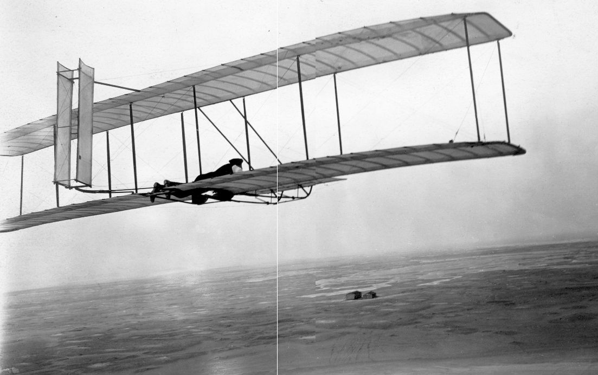

De geschiedenis
In 1480 begon Leonarda da Vinci met het tekenen met een ontwerp waarmee je kon vliegen. Later hebben de gebroeders Montgolfier de luchtballon in 1783 uitgevonden. Rond 1890 dachten mensen dat je alleen kon vliegen als je voertuig kon zweven. De mensen in die tijd gingen aan de slag om zo’n soort voertuig te maken, maar één man was geslaagd hierin, zijn naam is Otto Lilienthal. Dit voertuig werd een zweefvliegtuig. In de 19e eeuw bouwde Graaf von Zeppelin een luchtschip (oftewel een zeppelin). Ook werd er in de 19e eeuw om precies te zijn 1903, een echte gemotoriseerde vliegtuig uitgevonden door de broers, Orville en Wilbur Wright . Dit was de eerste voertuig die gemotoriseerd was en een hogere dichtheid had dan de lucht. Dit vliegtuig kreeg de naam Flyer. Na deze uitvinding ging het heel snel met de ontwikkeling van de vliegtuig.

Bronnen